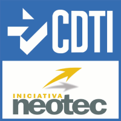
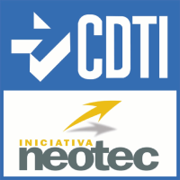

Smart TIO
Эко
More green, more eco
Добавьте экологический модуль в Smart TIO и получайте экологические результаты в дополнение к экономическим результатам. Эко-модель включает выбросы углерода по секторам, а также использование энергии для различных типов возобновляемых и невозобновляемых источников энергии, таких как уголь, нефтепродукты и другие. Это мощный инструмент для поддержки экономических решений, направленных на снижение ущерба окружающей среде и повышение общего благосостояния.
Принятие во внимание заботы об окружающей среде при принятии решений улучшает здоровье населения и сохраняет природные ресурсы, повышая долгосрочное благосостояние.
Smart TIO
Социальный
More social, more inclusive
Добавьте социальный модуль в Smart TIO, чтобы учитывать влияние моделирования политики на рабочую силу. На пути к инклюзивной и устойчивой экономике подразумевается, что учитываются не только экономические и экологические, но и социальные последствия. Модуль Social Smart TIO обеспечивает прямое и косвенное влияние реализации новой политики на результаты рынка труда, такие как количество созданных или ликвидированных рабочих мест.
Включите индикаторы рынка труда в процесс принятия решений, чтобы продемонстрировать социальное воздействие введения политики.
Smart TIO
Эко
More green, more eco
Добавьте экологический модуль в Smart TIO и получайте экологические результаты в дополнение к экономическим результатам. Эко-модель включает выбросы углерода по секторам, а также использование энергии для различных типов возобновляемых и невозобновляемых источников энергии, таких как уголь, нефтепродукты и другие. Это мощный инструмент для поддержки экономических решений, направленных на снижение ущерба окружающей среде и повышение общего благосостояния.
Принятие во внимание заботы об окружающей среде при принятии решений улучшает здоровье населения и сохраняет природные ресурсы, повышая долгосрочное благосостояние.
Smart TIO
Социальный
More social, more inclusive
Добавьте социальный модуль в Smart TIO, чтобы учитывать влияние моделирования политики на рабочую силу. На пути к инклюзивной и устойчивой экономике подразумевается, что учитываются не только экономические и экологические, но и социальные последствия. Модуль Social Smart TIO обеспечивает прямое и косвенное влияние реализации новой политики на результаты рынка труда, такие как количество созданных или ликвидированных рабочих мест.
Включите индикаторы рынка труда в процесс принятия решений, чтобы продемонстрировать социальное воздействие введения политики.
Тренинги
Мы предлагаем индивидуальные онлайн и офлайн тренинги, чтобы полностью раскрыть потенциал Smart TIO. Свяжитесь с нами, чтобы мы могли разработать тренинги, соответствующие потребностям вашего учреждения.
Демоверсия
Enjoy Smart TIO
Демо доступно для загрузки с рабочего стола
Протестируйте Smart TIO, загрузив демоверсию для Windows (скоро появится версия для Mac). Демоверсия основана на имитации данных небольшого хозяйства с некоторой корректировкой, где вы можете протестировать все функции Smart TIO и выбрать наиболее подходящие варианты.
Тренинги
Мы предлагаем индивидуальные онлайн и офлайн тренинги, чтобы полностью раскрыть потенциал Smart TIO. Свяжитесь с нами, чтобы мы могли разработать тренинги, соответствующие потребностям вашего учреждения.

 

Smart TIO is a software funded by CDTI & GAIN”